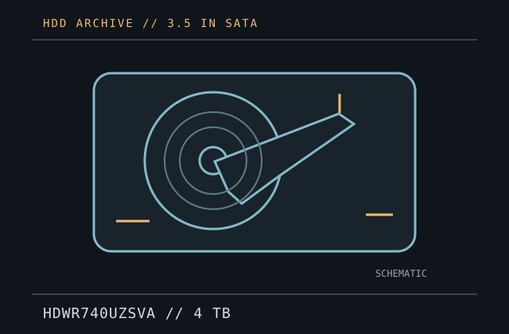

[ IDENTIFIED HDD // MODEL-SPECIFIC RECORD ]
Toshiba X300 HDWR740UZSVA
4 TB; 3.5-inch; SATA 6 Gbit/s. Model-specific identification, performance, compatibility and preservation notes. This record applies only to the exact SKU shown; related capacities and revisions can differ.

IDENTIFICATION: Match the complete model code and suffix on the label to the manufacturer model table. Record firmware and serial details; do not infer a sector mode or compatibility from the X300/P300 family name alone.
Recorded specifications
| Exact model / SKU | Toshiba X300 HDWR740UZSVA |
|---|---|
| Capacity | 4 TB (manufacturer-listed decimal capacity) |
| Form factor | 3.5-inch desktop internal hard drive |
| Sector format | Toshiba identifies Advanced Format (AF); exact logical/physical sector presentation (512e or 4Kn) is not specified in the cited sheet. |
| Interface | SATA 6.0 Gbit/s |
| Rotational speed | 7200 RPM |
| Buffer / cache | 512 MB |
| Recording technology | CMR (manufacturer model-specific data sheet) |
| Intended use / workload | Manufacturer lists powerful desktop workstations, gaming computers and home media computers. Toshiba lists powerful desktop workstations, gaming computers and home media computers; a workload rating is not stated. |
| Reliability caveat | Published product ratings do not establish the condition of an individual used drive or guarantee future operation. SMART and self-tests cannot replace verified, independent backups. |
Compatibility and preservation
- Use a SATA-capable host and confirm that its controller, firmware, enclosure and operating system support the drive's full capacity and reported sector format. A physically fitting connector is not sufficient proof of compatibility.
- No annual workload or duty-cycle rating is stated in the cited X300 specification; do not infer NAS, RAID, or continuous-write suitability from the desktop/gaming positioning.
- Before use, confirm power connectors, mounting clearance, cooling and firmware behavior against the complete label and current manufacturer documentation. For older hosts, verify BIOS capacity limits and sector translation.
- For data recovery, avoid writes, formatting, repeated power cycles and stress tests. If the drive clicks, disconnects or reports read errors, power it down and seek qualified advice; never open it outside a clean environment.
- Keep verified checksums and multiple independent copies. An HDD must not be the sole copy of important data.
Manufacturer sources
- Toshiba X300 Performance Hard Drives data sheet (June 2025)Manufacturer specification table lists the exact capacity/SKU and the cited model's form factor, interface, sector/recording details and performance characteristics. Match the full suffix on the drive label.
- Toshiba Toshiba X300 product informationManufacturer product-family page documents the desktop/gaming product positioning and compatible use cases; it does not guarantee workload suitability for a particular host or used unit.
Specifications are transcribed from manufacturer documentation; region, production revision and suffix may affect the exact marketed configuration.